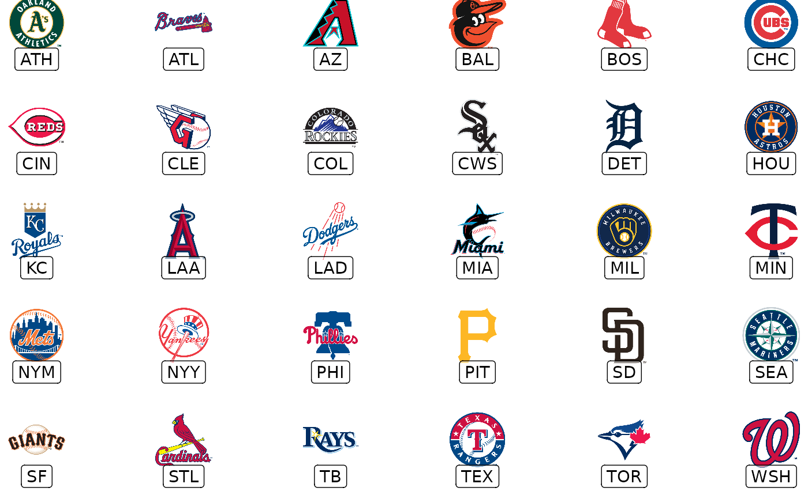
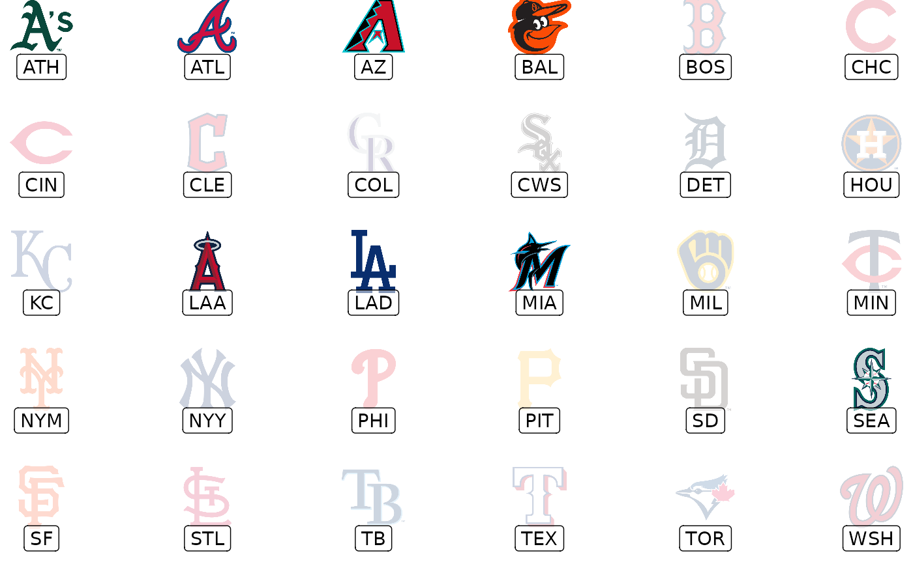
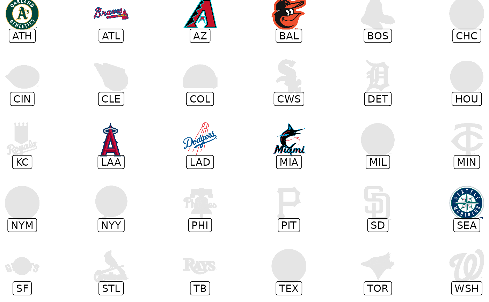
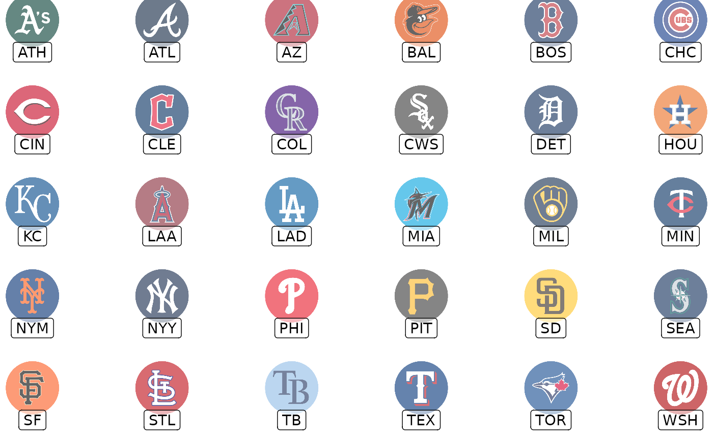

geom_mlb_logos() and geom_mlb_scoreboard_logos() are used to
plot MLB team and league logos instead of points in a ggplot. It requires
x, y aesthetics as well as a valid MLB team abbreviation. The latter can be
checked with valid_team_names() but is also cleaned before being plotted.
Usage
geom_mlb_logos(
mapping = NULL,
data = NULL,
stat = "identity",
position = "identity",
...,
nudge_x = 0,
nudge_y = 0,
na.rm = FALSE,
show.legend = FALSE,
inherit.aes = TRUE
)
geom_mlb_scoreboard_logos(
mapping = NULL,
data = NULL,
stat = "identity",
position = "identity",
...,
nudge_x = 0,
nudge_y = 0,
na.rm = FALSE,
show.legend = FALSE,
inherit.aes = TRUE
)Arguments
- mapping
Set of aesthetic mappings created by
aes(). If specified andinherit.aes = TRUE(the default), it is combined with the default mapping at the top level of the plot. You must supplymappingif there is no plot mapping.- data
The data to be displayed in this layer. There are three options:
If
NULL, the default, the data is inherited from the plot data as specified in the call toggplot().A
data.frame, or other object, will override the plot data. All objects will be fortified to produce a data frame. Seefortify()for which variables will be created.A
functionwill be called with a single argument, the plot data. The return value must be adata.frame, and will be used as the layer data. Afunctioncan be created from aformula(e.g.~ head(.x, 10)).- stat
The statistical transformation to use on the data for this layer, either as a
ggprotoGeomsubclass or as a string naming the stat stripped of thestat_prefix (e.g."count"rather than"stat_count")- position
Position adjustment, either as a string naming the adjustment (e.g.
"jitter"to useposition_jitter), or the result of a call to a position adjustment function. Use the latter if you need to change the settings of the adjustment.- ...
Other arguments passed on to
ggplot2::layer(). These are often aesthetics, used to set an aesthetic to a fixed value. See the below section "Aesthetics" for a full list of possible arguments.- nudge_x, nudge_y
Horizontal and vertical adjustment to nudge labels by. Useful for offsetting text from points, particularly on discrete scales. Cannot be jointly specified with
position.- na.rm
If
FALSE, the default, missing values are removed with a warning. IfTRUE, missing values are silently removed.- show.legend
logical. Should this layer be included in the legends?
NA, the default, includes if any aesthetics are mapped.FALSEnever includes, andTRUEalways includes. It can also be a named logical vector to finely select the aesthetics to display.- inherit.aes
If
FALSE, overrides the default aesthetics, rather than combining with them. This is most useful for helper functions that define both data and aesthetics and shouldn't inherit behaviour from the default plot specification, e.g.borders().
Value
A ggplot2 layer (ggplot2::layer()) that can be added to a plot
created with ggplot2::ggplot().
Aesthetics
geom_mlb_logos() and geom_mlb_scoreboard_logos() understand the following aesthetics (required aesthetics are in bold):
x - The x-coordinate.
y - The y-coordinate.
team_abbr - The team abbreviation. Need to use Savant's abbreviation.
alpha = NULL- The alpha channel, i.e. transparency level, as a numerical value between 0 and 1.colour = NULL- The image will be colourized with this colour. Use the special character"b/w"to set it to black and white. For more information on valid colour names in ggplot2 see https://ggplot2.tidyverse.org/articles/ggplot2-specs.html?q=colour#colour-and-fillangle = 0- The angle of the image as a numerical value between 0° and 360°.hjust = 0.5- The horizontal adjustment relative to the given x coordinate. Must be a numerical value between 0 and 1.vjust = 0.5- The vertical adjustment relative to the given y coordinate. Must be a numerical value between 0 and 1.width = 1.0- The desired width of the image innpc(Normalised Parent Coordinates). The default value is set to 1.0 which is big but it is necessary because all used values are computed relative to the default. A typical size iswidth = 0.075(see below examples).height = 1.0- The desired height of the image innpc(Normalised Parent Coordinates). The default value is set to 1.0 which is big but it is necessary because all used values are computed relative to the default. A typical size isheight = 0.1(see below examples).
Examples
# \donttest{
library(mlbplotR)
library(ggplot2)
team_abbr <- valid_team_names()
# remove conference logos from this example
team_abbr <- team_abbr[!team_abbr %in% c("NL", "AL", "MLB")]
df <- data.frame(
a = rep(1:6, 5),
b = sort(rep(1:5, 6), decreasing = TRUE),
teams = team_abbr
)
# keep alpha == 1 for all teams including an "A"
matches <- grepl("A", team_abbr)
df$alpha <- ifelse(matches, 1, 0.2)
# also set a custom fill colour for the non "A" teams
df$colour <- ifelse(matches, NA, "gray")
# scatterplot of all logos
ggplot(df, aes(x = a, y = b)) +
geom_mlb_logos(aes(team_abbr = teams), width = 0.075) +
geom_label(aes(label = teams), nudge_y = -0.35, alpha = 0.5) +
theme_void()

# apply alpha via an aesthetic from inside the dataset `df`
# please note that you have to add scale_alpha_identity() to use the alpha
# values in your dataset!
ggplot(df, aes(x = a, y = b)) +
geom_mlb_scoreboard_logos(aes(team_abbr = teams, alpha = alpha), width = 0.075) +
geom_label(aes(label = teams), nudge_y = -0.35, alpha = 0.5) +
scale_alpha_identity() +
theme_void()

# apply alpha and colour via an aesthetic from inside the dataset `df`
# please note that you have to add scale_alpha_identity() as well as
# scale_colour_identity() to use the alpha and colour values in your dataset!
ggplot(df, aes(x = a, y = b)) +
geom_mlb_logos(aes(team_abbr = teams, alpha = alpha, colour = colour), width = 0.075) +
geom_label(aes(label = teams), nudge_y = -0.35, alpha = 0.5) +
scale_alpha_identity() +
scale_colour_identity() +
theme_void()

# apply alpha as constant for all logos
ggplot(df, aes(x = a, y = b)) +
geom_mlb_scoreboard_logos(aes(team_abbr = teams), width = 0.075, alpha = 0.6) +
geom_label(aes(label = teams), nudge_y = -0.35, alpha = 0.5) +
theme_void()

# it's also possible to plot league logos
league <- data.frame(a = 1:3, b = 0, teams = c("AL", "NL", "MLB"))
ggplot(league, aes(x = a, y = b)) +
geom_mlb_logos(aes(team_abbr = teams), width = 0.3) +
geom_label(aes(label = teams), nudge_y = -0.4, alpha = 0.5) +
coord_cartesian(xlim = c(0.5,3.5), ylim = c(-0.75,.75)) +
theme_void()
 # }
# }